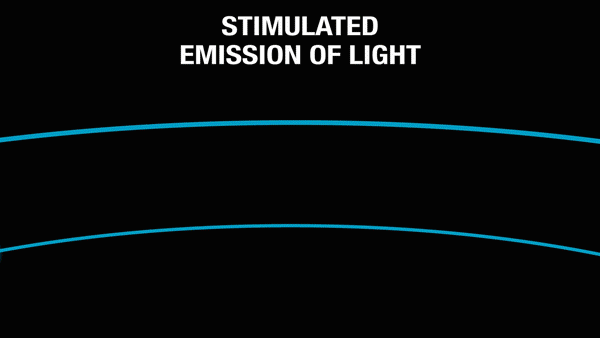
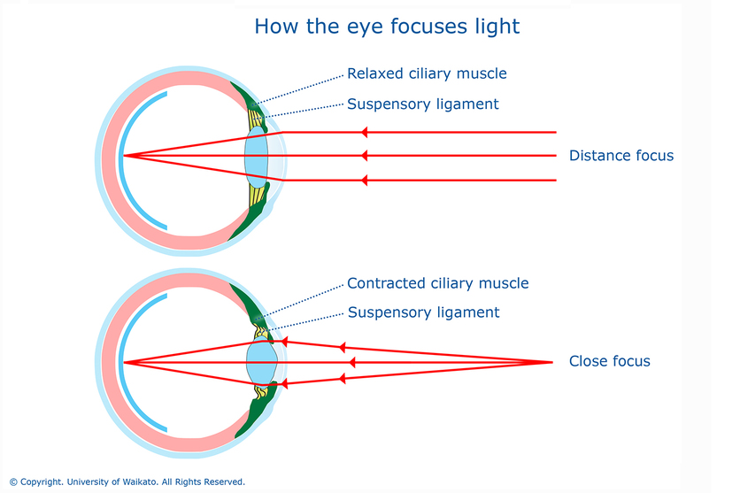

<!DOCTYPE html>

<html>
  
 <head>
   
   

    </head>

    </html>
<h1><b>ENG0018 Computer Labatory 2023/24</b></h1>
<h2> Student URN: 6861379</h2>
<hr>
<h2 style="font-family:calibri;"><b>Confrence paper: The principles of physics behind laser eye surgery</b></h2>

   <!style for tables>
      <style>
        table{
          font-family: arial, sans-serif;
          border-collapse: collapse;
          width: 30%;

          }

          td, th{
            border: 1px solid #dddddd;
            text-align: left;
            padding: 8px;

          }

          tr:nth-child(even) {
            background-color: #dddddd;
          }

          
          
      </style>

     <style>
  p.exl {
    margin-left: 240px;
  }
    </style>
   </head>
       
<meta namme="veiwport" content="width=device-width, initial-scale=1">
<link rel="stylesheet" href="https://www.w3schools.com/w3css/4/w3.css">
<style>
.myslides {display:none;}
</style>
     <body style="background-color:#FFFFFF;margin-left:50px;">
</style>

 <table of contents>
    <table>

      <tr>
        <th><h3>Table of contents</h3></th>
      </tr>
      <tr>
        <td><a href="#Abstract">Abstract</td>
      </tr>
      <tr>
        <td><a href="#Introduction">Introduction</td>
      </tr>
      <tr>
        <td><a href="#Main Body">Main Body</td>
      </tr>
      <tr>
        <td><a href="#References">References</td>
      </tr>
    </table>
      </tr>
    </table>
       

       
<hr>
<h3 id="Abstract">Abstract</h3>

       <p class="ex1">
         <pre>
Laser eye surgery uses precise laser technology to reshape the cornea and improve vision, 
helping people reduce or even eliminate their need for glasses or contacts. 
Popular methods like LASIK, PRK, work by adjusting the eyes focus, and each offers unique benefits.
This article offers a simple overview of how these procedures work, focusing on the physics behind it.
We will then delve into the types of conditions it is used to treat. 
         </pre>
     </p>
<h3 id="Introduction">Introduction</h3>

      <p class="ex1">
        <pre>
Laser eye surgery (refractive surgery) is a type of ocular surgery which is used to improve vision by 
reshaping the cornea using an excimer laser that emits ultraviolet light to vaporise corneal tissue 
<a href="#(Loveall, 2022)"><I>(Loveall, 2022)</I></a> <a href="#(Alila Medical Media, 2016)"><I>(Alila Medical Media, 2016)</I></a>. Although laser eye surgery is expensive the 
long-term maintenance of glasses and contacts are costly <a href="#(Loveall, 2022)"><I>(Loveall, 2022)</I></a>. This procedure is 
used to correct conditions such as myopia (short-sightedness), hyperopia (long-sightedness) and
astigmatism. There are different types of laser surgery, however the most common types are LASIK 
(Laser Assisted In-Situ Keratomileusis) and PRK (photorefractive keratectomy) <a href="#(Cleveland Clinic, 2023)"><I>(Cleveland Clinic, 2023)</I></a>.
        </pre>
</p>
  <h3 id="Main Body">Main Body</h3>
       <p class="ex1">
         <pre>
LASER is an acronym for light amplification by stimulated emission of light,
<a href="#(National Ignition Facility & Photon Science, no date)"><I>(National Ignition Facility & Photon Science, no date)</I></a> 
the concept of stimulated emission was introduced by Albert Einstein in 1917 with the
first laser demonstration 43 years later in 1960 by Theodore Maiman <a href="#(Eden, J. Gary, 1985)"><I>(Eden, J. Gary, 1985)</I></a> <a href="#(Scientized, 2017)"><I>(Scientized, 2017)</I></a>.
Lasers are produced by an active medium (gain medium) inside the laser optical cavity <a href="#(Carol Korzeniewski, no date)"><I>(Carol Korzeniewski, no date)</I></a>.
Atoms of the gain medium undergoes stimulated emission when the electrons absorb energy from an electrical current 
or photon - when a photon is absorbed it annihilates <a href="#(National Ignition Facility & Photon Science, no date)"><I>(National Ignition Facility & Photon Science, no date)</I></a>
<a href="#(Scientized, 2017)"><I>(Scientized, 2017)</I></a>. Photons are then emitted when the electrons return to ground state; these are amplified through
stimulated emission using a material that has properties to amplify light - (materials with Meta stable states that 
increase the time an electron remain excited from nanoseconds to milliseconds <a href="#(Scientized, 2017)"><I>(Scientized, 2017)</I></a>) – which provides
optical feedback through a mechanism that reflects light back into the gain material, <a href="#(Carol Korzeniewski, no date)"><I>(Carol Korzeniewski, no date)</I></a> 
figure 1 shows how this process works. Lasers take advantage of the quantum properties of atoms that absorb and
radiate photons <a href="#(National Ignition Facility & Photon Science, no date)"><I>(National Ignition Facility & Photon Science, no date)</I></a>.

  
  Figure 1 : Stimulated Emmision of Light <a href="#(National Ignition Facility & Photon Science, no date)"><I>(National Ignition Facility & Photon Science, no date)</I></a>

Optics explore the behaviour and properties of light and how it interacts with other particles, 
<a href="#(techiescienceScience Core SME, 2023)"><I>(techiescienceScience Core SME, 2023)</I></a> also looking at how light can be manipulated. In this procedure the cornea shape
is altered to change the refractive power. The cornea is transparent with a higher refractive index then that of air, 
additionally crystalline lenses in the eye, located behind the cornea are ‘convex’ shape. This allows light to bend 
towards the central axis of the lens and converge at a single point, <a href="#(techiescienceScience Core SME, 2023)"><I>(techiescienceScience Core SME, 2023)</I></a> the retina. 
In normal eyes the accommodation reflex can increase or decrease the refractive power. In dim light the pupils relax,
ciliary muscles contact allowing more light in, this steepens the curvature of the lens (more biconvex shape) which 
increases the focal power <a href="#(Brittany J. Carr, and William K. Stell, 2017)"><I>(Brittany J. Carr, and William K. Stell, 2017))</I></a>. The degree of refraction is dependent on 
the shape and curvature of the cornea, with a steeper curvature being associated with myopia contrariwise a flattened 
cornea with hyperopia. Oncoming light needs to be focused on the retina for clear and sharp vision, if not it results 
in poor, blurry vision. Thicker convex lens causes light to be severely <a href="#(BYJU's, no date)"><I>(BYJU's, no date)</I></a> <a href="#(Focal length, no date)"><I>(Focal length, no date)</I></a> bent 
causing light to converge at a shorter distance, before the retina. This is associated with myopia where light is 
refracted too far therefore further objects appear blurry. When an object is close, the ciliary muscles will contract so
the lens’ are thicker, vice versa with objects further away, figure 2 shows the change in thickness of the lens as the 
eye focuses light <a href="#(Tom Mangan, 2021)"><I>(Tom Mangan, 2021)</I></a> <a href="#(Mayo Clinic, 2022)"><I>(Mayo Clinic, 2022)</I></a>.

  
  Figure 2 : How the eye focuses light <a href="https://www.sciencelearn.org.nz/resources/50-how-the-eye-focuses-light"><I>(Science Learning Hub, 2012)</I></a>
  
Laser eye surgery corrects myopia by flattening the cornea and hyperopia by steepening the cornea <a href="#(Alila Medical Media, 2016)"><I>(Alila Medical Media, 2016)</I></a>.
Astigmatism is a slight defect in the arc of the cornea so in this case irregularities are smoothened out. A pre-operative 
evaluation determines whether you qualify for LASIK, followed by corneal mapping to personalise the surgery to your individual
eye characteristics. First, eye drops are given to numb eyes and prevent them from drying. A microkeratome (small blade) or
femtosecond laser makes a thin flap in the cornea, <a href="#(WebMD, 2022)"><I>(WebMD, 2022)</I></a> <a href="#(LASIK MD Vision, no date)"><I>(LASIK MD Vision, no date)</I></a> <a href="#(National Eye Institute, 2021)"><I>(National Eye Institute, 2021)</I></a>
the flap is pulled back and an excimer laser that emits cool ultraviolet rays is used to reshape the cornea. However, during 
PRK no flap is created and instead the epithelial cells on the surface of the eye are removed <a href="#(Alila Medical Media, 2016)"><I>(Alila Medical Media, 2016)</I></a>.
Therefore, recovery is much longer compared to LASIK as it takes the cells a few days to regenerate. PRK is usually 
recommended to people with dry eyes because a side effect of LASIK is chronically severe dry eyes <a href="#(Cleveland Clinic, 2023)"><I>(Cleveland Clinic, 2023)</I></a>.
Furthermore, LASIK has a high success rate among patients, mild to moderate prescriptions have around 80% attaining perfect 
vision. Those with more severe visual impairments get varied results, although at least 40% have reported attaining 20/20 
vision <a href="#(LESH, no date)"><I>(LESH, no date)</I></a>.

This procedure has its pros and cons: <a href="#(Circle Health Group, 2024)"><I>(Circle Health Group, 2024)</I></a>
•	Improved vision with quick recovery and results 
•	Long term cost saving 
•	Minimal discomfort during the procedure 
•	Stable, predictable results providing long term vision correction 
•	Versatile 

•	Risk of vision regression 
•	Infection or dislodgment in corneal  
•	Corneal ectasia (condition that causes the cornea bulge and thin) 
•	Temporary discomfort during recovery  
•	Risk of side effects and complications, e.g. glare and difficulty with night vision 

Excluding vision correction and lasers there are many other applications of optical physics. Another application is with
optical fibres which are important for telecommunications and transmitting light signals over long distances with minimal 
loss. Optical fibres really on total internal reflection which is based on the principles of reflection and refraction. 
As discussed, the principles of physics behind optics can be used and manipulated to produce special effects
<a href="#(techiescienceScience Core SME, 2023)"><I>(techiescienceScience Core SME, 2023)</I></a> <a href="#(CyberPhysics, no date)"><I>(CyberPhysics, no date)</I></a>.
         </pre>

       <p id="date&time"></p>
<script>
//Javascript to display the date and time on my webpage
const d = new Date();
document.getElementById("date&time").innerHTML = d;

</script>

<!DOCTYPE html>
<html>
  <head>
    <title>Change Button Colour</title>
  </head>
  <body>
    <button id = "colorButton">Click me to change colour</button>
    <script>
      //Get a reference to the button element
      var button = document.getElementByld("colorButton");

      //Function to change the button color 
      function changeColor(){
        //Generate a random color (hexadecimal)
        var randomColor = "#" + Math.floor(Math.random()*16777215).toString(16);

        //Set the button's background color to the random color
        button.style.backgroundColor=randomColor;
      }

      //Add a click event listener to the button 
      button.addEventListener("click", changeColor);
    </script>
  </body>
</html>

<h3 id="References">References</h3>

       <p>
         <pre>
<a id="(Loveall, 2022)">Loveall, H., (2022)</a> <a href="https://www.health-host.co.uk/understanding-laser-eye-surgery/"><I>Understanding the laser eye surgery</I></a>
(Accessed: 23 October 2024)

<a id="(Alila Medical Media, 2016)">Alila Medical Media (2016)</a> <a href="https://www.youtube.com/watch?v=dKANhIU7Sxk"><I>LASIK or PRK? Which Is Right for me? Animation</I></a>
(Accessed: 23 October 2024)

<a id="(Cleveland Clinic, 2023)">Cleveland Clinic (2023)</a> <a href="https://my.clevelandclinic.org/health/treatments/21805-lasik-eye-surgery"><I>LASIK Eye Surgery</I></a> 
(Accessed: 27 October 2024)

<a id="(National Ignition Facility & Photon Science, no date)">National Ignition Facility & Photon Science (no date)</a> <a href="https://lasers.llnl.gov/education/how-lasers-work"><I>NIF's Guide to How Lasers Work</I></a> 
(Accessed: 18 October 2024).  

<a id="(Scientized, 2017)">Scientized (2017)</a> <a href="https://www.youtube.com/watch?v=_JOchLyNO_w"><I>How Lasers Work - A Complete Guide</I></a>
(Accessed: 4 November 2024)

<a id="(Carol Korzeniewski, no date)">Carol Korzeniewski (no date)</a> <a href="https://chem.libretexts.org/Bookshelves/Analytical_Chemistry/Supplemental_Modules_(Analytical_Chemistry)/Instrumentation_and_Analysis/Introduction_to_Lasers/03_Basic_Principles/02_Laser_Operation_and_Components"><I>Laser Operations and Components</I></a> 
(Accessed: 12 November 2024)

<a id="(techiescienceScience Core SME, 2023)">techiescienceScience Core SME (2023)</a> <a href=" https://lambdageeks.com/what-are-the-basic-principles-of-optics/#:~:text=Basic%20Principles%20of%20Optics%201%20Light%20Propagation%20Light,interact%20with%20each%20other%20or%20with%20obstacles.%20"><I>Principles Of Optics: A Comprehensive Guide</I></a>
(Accessed: 12 November 2024)

<a id="(Brittany J. Carr, and William K. Stell, 2017)">Brittany J. Carr, and William K. Stell (2017)</a> <a href="https://www.ncbi.nlm.nih.gov/books/NBK470669/figure/myopia.F7/#:~:text=When%20the%20ciliary%20muscle%20is,less%20focussing%20power%20(b)"><I>The Organization of the Retina and Visual System</I></a>
(Accessed: 12 November 2024)

<a id="(BYJU's, no date)">BYJU's (no date)</a> <a href="https://byjus.com/physics/convex-lens/"><I>Convex lenses</I></a>  
(Accessed: 16 November 2024)  

<a id="(Focal length, no date)">Focal length (no date)</a> <a href="https://www.oxfordreference.com/display/10.1093/oi/authority.20110803095825882#:~:text=The%20more%20convex%20(or%20thicker,different%20kinds%20of%20image%20effects"><I>Focal Legnth</I></a> 
(Accessed: 12 November 2024)

<a id="(Mayo Clinic, 2022)">Mayo Clinic (2022)</a> <a href="https://www.mayoclinic.org/diseases-conditions/nearsightedness/symptoms-causes/syc-20375556#:~:text=Nearsightedness%20(myopia)%20is%20a%20common,to%20bend%20(refract)%20inaccurately"><I>Nearsightedness</I></a>
(Accessed: 4 November 2024) 

<a id="(Tom Mangan, 2021)">Tom Mangan (2021)</a> <a href="https://www.allaboutvision.com/eye-care/eye-anatomy/eye-shapes/"><I>How eye shape affects your vision</I></a>
(Accessed: 18 November 2024)

<a id="(WebMD, 2022)">WebMD (2022)</a> <a href="https://www.webmd.com/eye-health/lasik-laser-eye-surgery"><I>LASIK Eye Surgery</I></a> 
(Accessed: 20 November 2024)

<a id="(LASIK MD Vision, no date)">LASIK MD Vision (no date)</a> <a href="https://www.lasikmd.com/what-to-expect/day-surgery/the-procedure-itself"><I>LASIK procedure (Standard and Custom)</I></a>
(Accessed: 20 November 2024) 

<a id="(National Eye Institute, 2021)">National Eye Institute (2021)</a> <a href="https://www.nei.nih.gov/learn-about-eye-health/eye-conditions-and-diseases/glaucoma/treatment"><I>Laser Treatment for Glaucoma</I></a>
(Accessed: 20 November 2024)

<a id="(LESH, no date)">LESH (no date)</a> <a href="https://www.lasereyesurgeryhub.co.uk/laser-eye-surgery/safety-2/#:~:text=This%20is%20predominant%20among%20LASIK,need%20to%20undergo%20corneal%20transplant"><I>Laser Eye Surgery Risks and Success Rates</I></a> 
(Accessed: 20 November 2024)

<a id="(Circle Health Group, 2024)">Circle Health Group (2024)</a> <a href="https://www.circlehealthgroup.co.uk/health-matters/eyes/the-pros-and-cons-of-laser-eye-surgery"><I>The pros and cons of laser eye surgery</I></a> 
(Accessed: 20 November 2024)

<a id="(CyberPhysics, no date)">CyberPhysics (no date)</a> <a href="https://www.cyberphysics.co.uk/topics/light/FiberOptics/FibreOptics.htm"><I>Optical Fibres</I></a>
(Accessed: 20 November 2024)

<a id="(Eden, J. Gary, 1985)">Eden, J. Gary (1985)</a> <a href="https://ieeexplore.ieee.org/document/6499878"><I>Laser Technology: Theory and Operating Principles: Application of the Principles of Quantum 
Electronics Has Yielded Hundreds of Lasers Whose Wavelengths Span from the Infrared to the X-Ray Region of the Spectrum</I></a> 
(Accessed: 4 November 2024)        
           
      </pre>
       </p>
       


  
